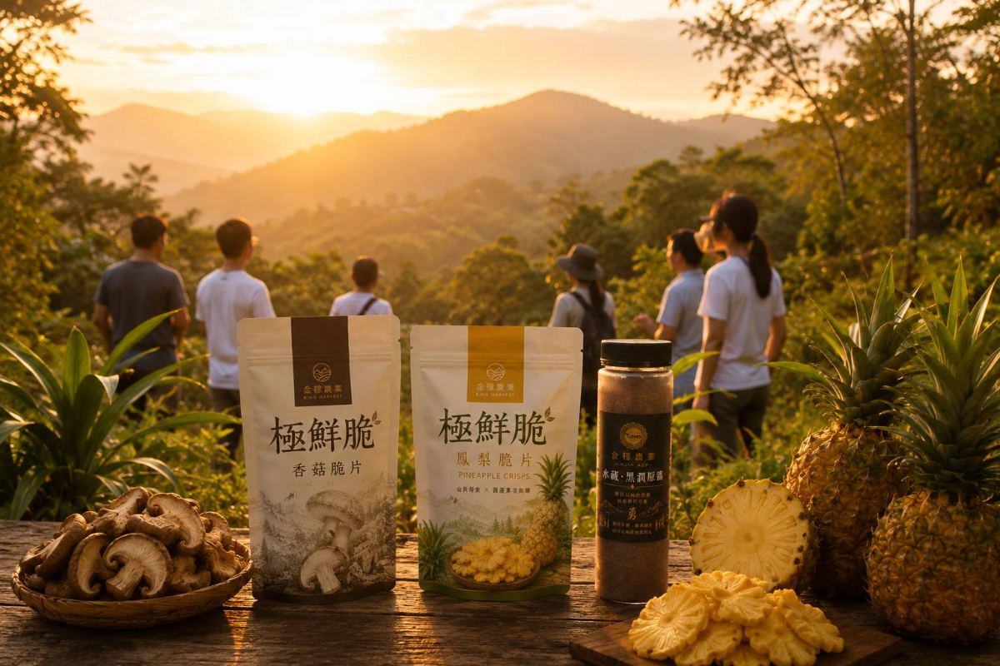
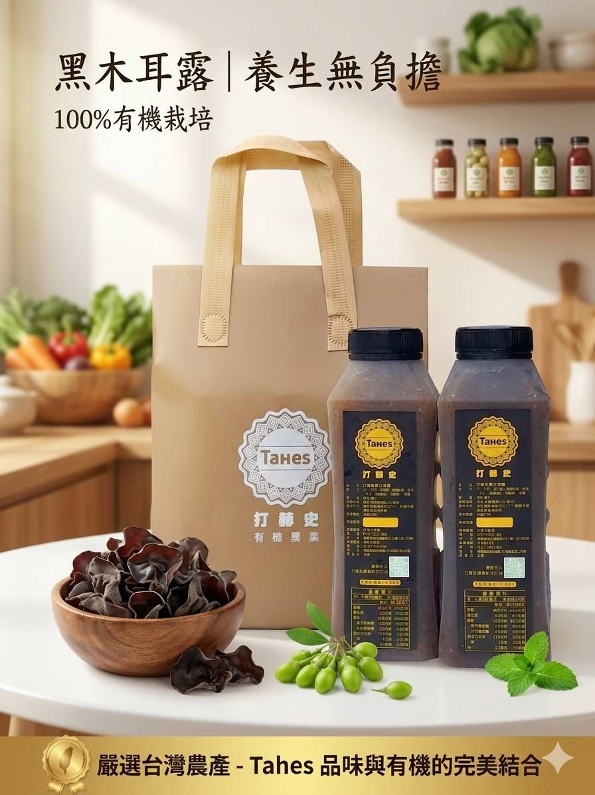
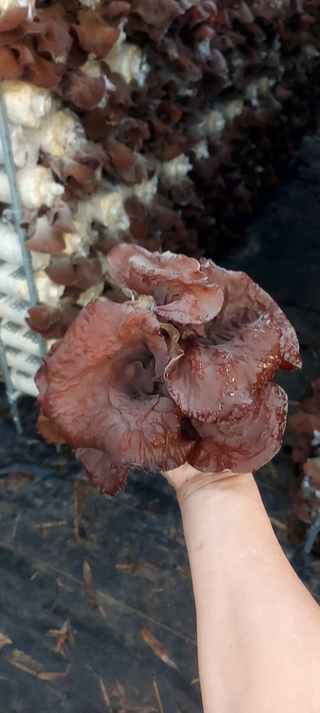
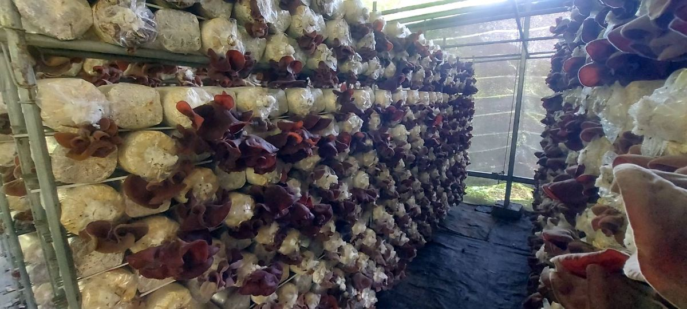
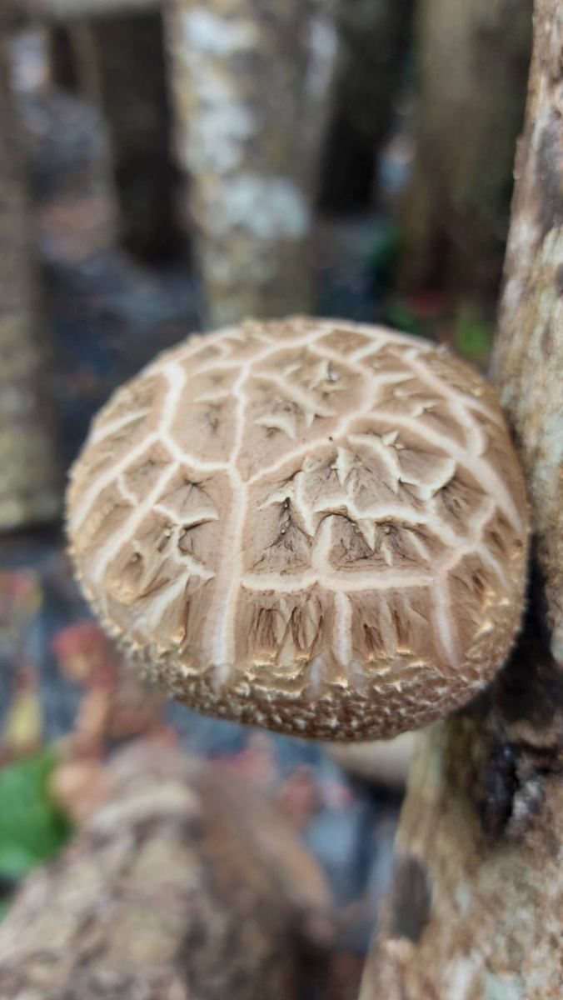
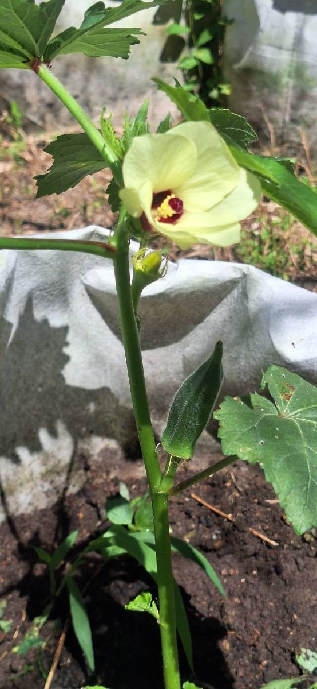
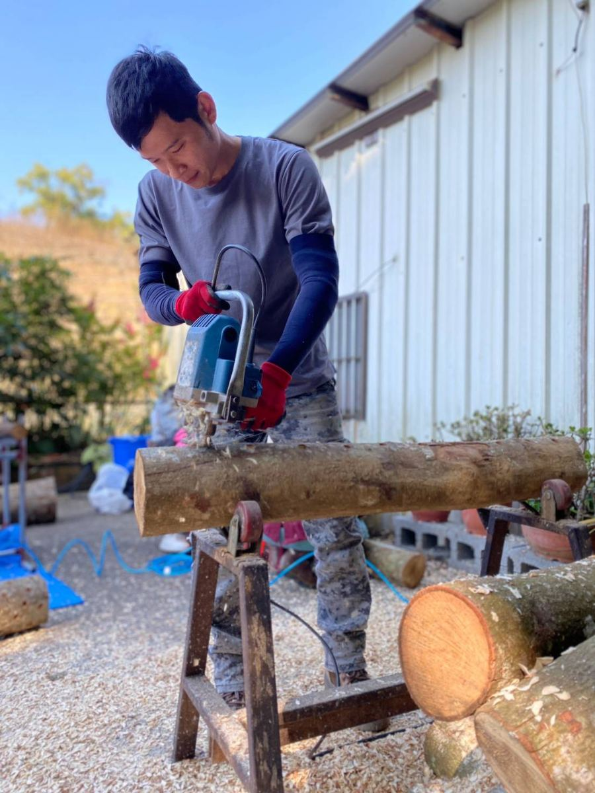
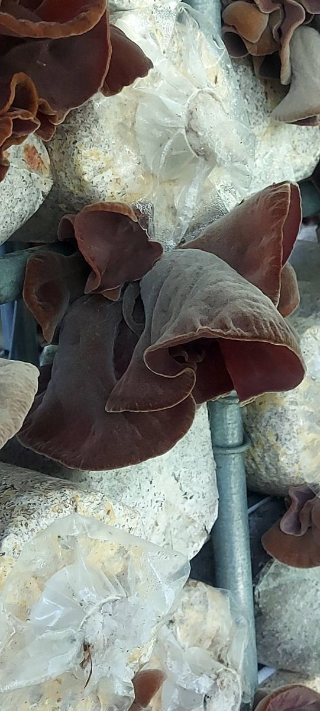
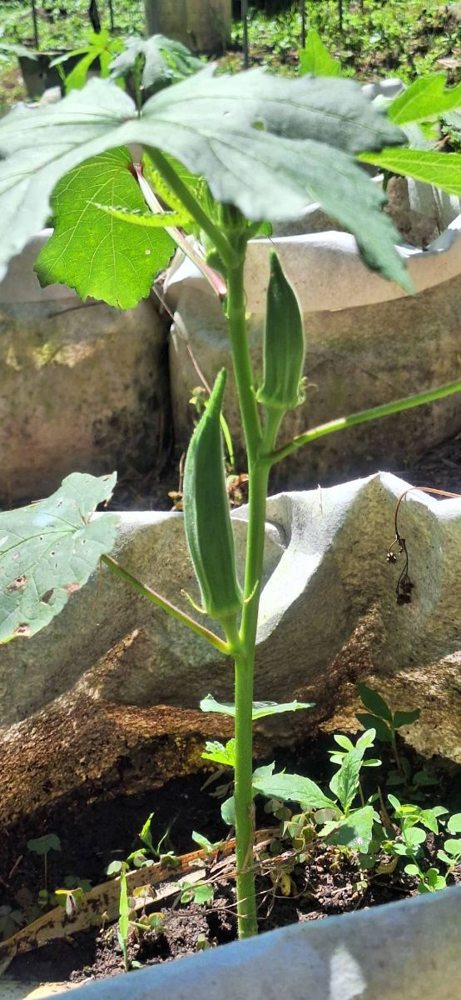

{{ p.tag }}
{{ p.name }}
{{ p.desc }}
苗栗小農自己種植、自己加工。嚴選在地蔬果，低溫真空烘焙，保留原味與營養，讓健康零食成為日常。

即時享用 × 天然食材 × 無負擔。上班點心、下午茶、追劇、外出旅遊、運動後補給，隨時隨地想吃就吃。
{{ p.desc }}


苗栗小農自己種植的黑木耳，加上紅棗、枸杞、老薑，以冬瓜糖慢火熬煮。在地新鮮熬煮，無添加防腐劑，養生無負擔。
金稼農業從苗栗南庄山林出發。不使用化學肥料與農藥，尊重自然、順應時節，支持在地農民建立穩定收入，把土地的故事透過品牌傳遞出去。





